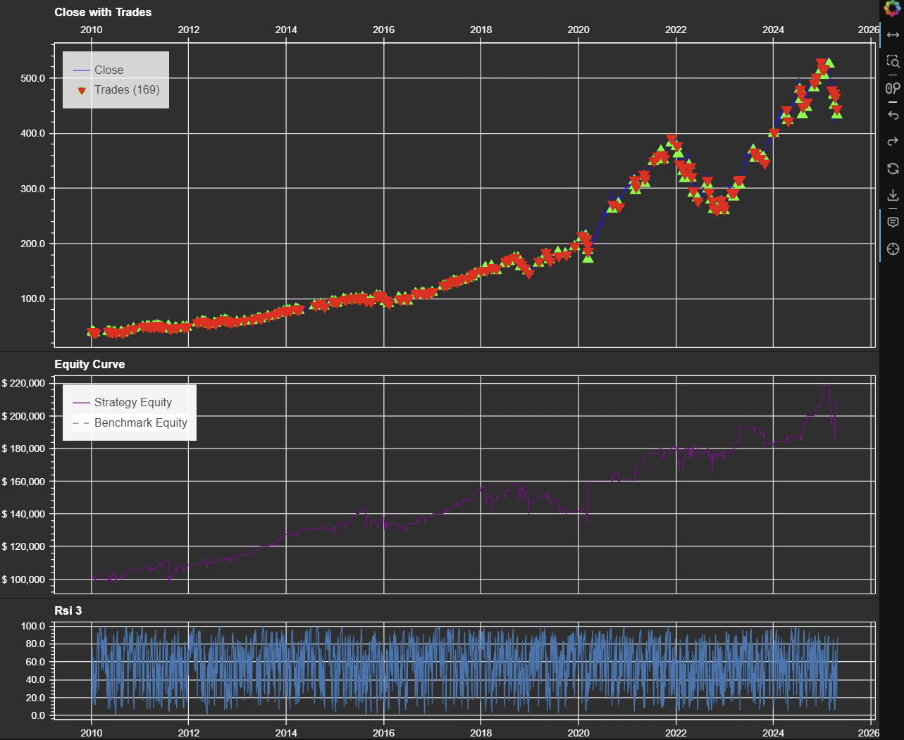

A lightweight Python framework for backtesting trading strategies.
oequant provides a simple and intuitive way to backtest trading strategies using historical data. Built upon popular Python libraries like Pandas, NumPy, and Bokeh, it aims for clarity, speed, and ease of use, allowing you to focus on strategy development and evaluation.
"An approximate answer to the right problem is worth a good deal more than an exact answer to an approximate problem."
— John Tukey
Easily fetch historical OHLCV data using yfinance for single or multiple tickers.
Define entry/exit signals using DataFrame columns or Pandas query strings. Supports various position sizing methods (fractional, quantity, nominal) and commission models.
Calculates key performance metrics (CAGR, Sharpe, Sortino, Max Drawdown, Win Rate, etc.) including benchmark comparison.
Visualize results with interactive Bokeh plots showing price, equity curve, trades, benchmark, and technical indicators.
Automatically generates and reports Buy & Hold benchmark results for comparison.
Leverages Pandas DataFrames and integrates smoothly with libraries like pandas-ta for indicator calculation.
You can install the latest version directly from GitHub:
pip install git+https://github.com/oeqaunt/oequant.git # Replace with your actual URLRequires Python 3.8+ and dependencies like pandas, numpy, yfinance, bokeh, pandas-ta, and tabulate.
This example demonstrates a simple RSI-based strategy on QQQ data.
import oequant as oq
import pandas_ta as ta
from bokeh.io import output_notebook
# Required for Bokeh plots in notebooks
output_notebook()
# 1. Get Data
ticker = "QQQ"
start_date = "2010-01-01"
end_date = "2025-05-01"
data = oq.get_data(ticker, start=start_date, end=end_date)
# 2. Add Indicator & Signals
# Calculate RSI_3
data.ta.rsi(length=3, append=True, col_names=('rsi_3',))
# Calculate exit signal: close > high.shift()
data['exit_signal'] = data['close'] > data['high'].shift(1)
# Entry signal: rsi_3 < 20 (will be passed as an expression)
entry_expression = "rsi_3 < 20"
data.dropna(inplace=True) # Drop NaNs from indicator calculation
# 3. Run Backtest
results = oq.backtest(
data=data,
entry_column=entry_expression,
exit_column='exit_signal',
fee_frac=0.001,
capital=100_000
)
# 4. Show Report and Plot
results.report(show_plot=True, plot_args={
'indicators_other': ['rsi_3'],
'per_indicator_plot_height': 160,
'plot_theme': 'dark'
})
--- Backtest Report ---
Start Date: 2010-01-04
End Date: 2025-04-30
Duration: 5595 days 00:00:00
Initial Capital: 100,000.00
Final Equity: 211,555.28
Benchmark Final Equity: 1,174,411.72
--- Performance Metrics ---
| | Strategy | Benchmark |
|====================|============|=============|
| CAGR (%) | 5.02% | 17.47% |
| Avg Trade (%) | 0.47% | 1,074.41% |
| Sharpe Ratio | 0.5031 | 0.8771 |
| Sortino Ratio | 0.3253 | 1.1264 |
| Time in Market (%) | 15.93% | 99.97% |
| Max Drawdown (%) | -16.14% | -35.12% |
| CAGR / Max DD | 0.3111 | 0.4975 |
| Serenity Ratio | 4.3518 | 3.1370 |
| Total Trades | 169.0000 | 1.0000 |
| Win Rate (%) | 69.23% | 100.00% |
| Loss Rate (%) | 30.77% | 0.00% |
| Avg Win Trade (%) | 1.52% | 1,074.41% |
| Avg Loss Trade (%) | -1.90% | 0.00% |
| Profit Factor | 1.7373 | inf |
| Avg Bars Held | 3.6331 | 3,854.0000 |
An interactive plot showing the price, trades, equity curve, benchmark, and RSI indicator would also be displayed:
oequant is distributed under the MIT License. See the LICENSE file in the repository for details.